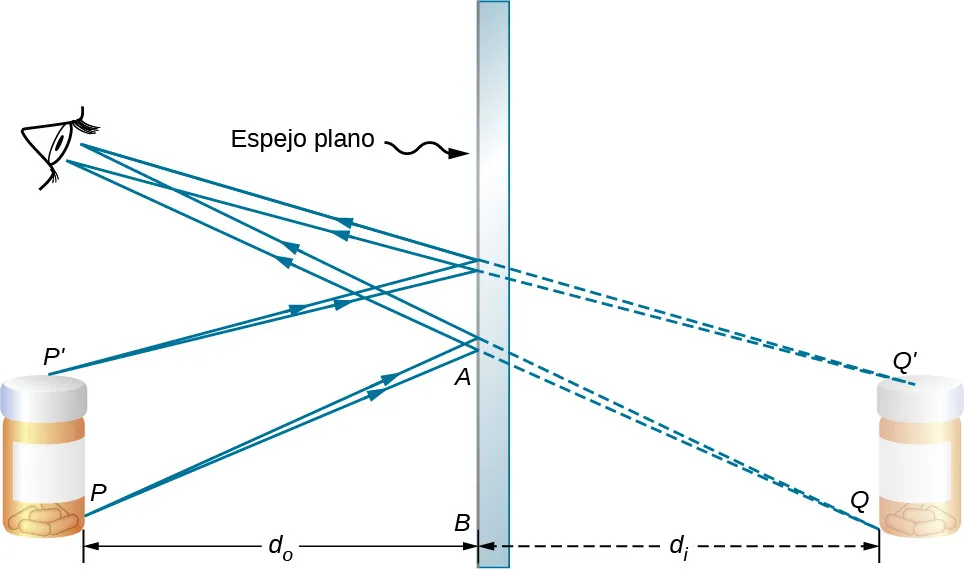
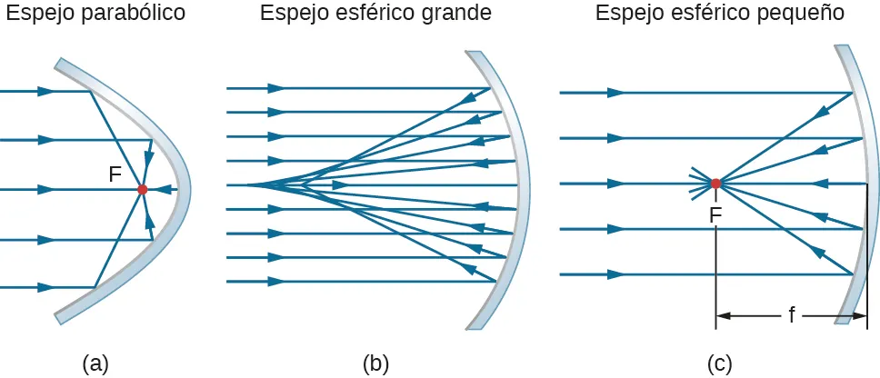
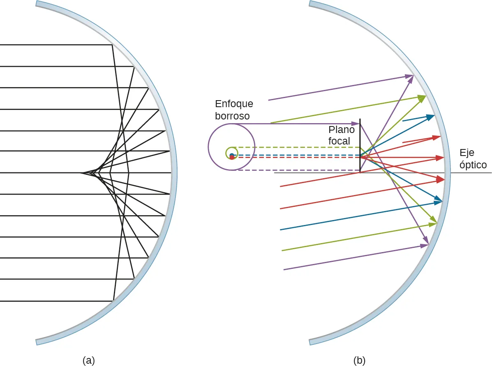
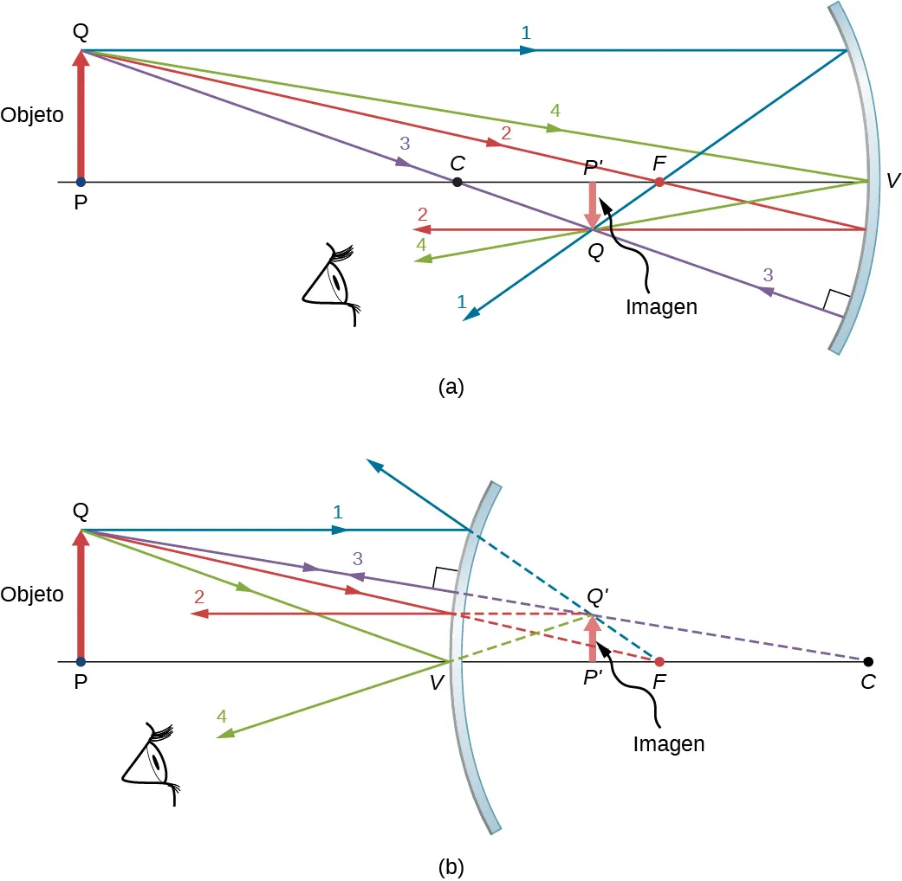

Espejos
Espejos
Espejo plano

Acceso gratuito en OpenStaxEspejo esférico
Parábolico vs esférico

Acceso gratuito en OpenStaxPara que los rayos converjan en un solo punto de una superficie curva, necesitamos que esta sea parabólica (los telescopios tienen esta lente).
- La imagen que genera es virtual, y todos los rayos convergen en ese punto perfectamente.
- El problema es que tienen un “eje”: son muy buenas generando imágenes donde apunte ese eje, pero si miro por arriba o por abajo del mismo no veré el objeto bien.
Por ello usamos en general superficies sin eje: ESFÉRICAS:
- Tienen la ventaja de no tener un eje.
- Pero en una esfera todos los rayos NO convergen en el mismo punto. Esto va a generar una aberración esférica:
- En la parte más cercana al centro de la superficie considerada, los rayos sí convergen en un punto de forma similar a la parábola.
- Sin embargo a medida que me alejo dejan de converger tan bien.
Para solventar esos problemas lo que hago es usar superficies esféricas cuyo radio de curvatura es muy grande, y van a funcionar muy bien siempre que estemos en unos ángulos cercanos al eje, es decir, siempre que funcione bien la aproximación de óptica paraxial.

Acceso gratuito en OpenStaxElementos de un espejo esférico:
Elementos de un espejo esférico:
- \(C\), centro de curvatura: Centro de la esfera imaginaria donde está el espejo.
- \(R\), radio de curvatura: es el radio de la esfera.
- Eje óptico: eje de simetría de la superficie del espejo. Se usa de eje de coordenadas.
- \(O\), centro del espejo: el punto donde el eje óptico corta la superficie del espejo. Se toma como origen del sistema de coordenadas.
- \(F\), foco: punto donde convergen los rayos de luz que salen paralelos al eje. - Los espejos esféricos SOLO TIENEN UN FOCO. - Si una objeto estuviera muy lejos y todos sus rayos vienen paralelos, se formaría en el foco.
- \(f\), distancia focal: distancia entre \(O\) y \(F\). En un espejo, como solo hay un foco, coinciden la distancia focal objeto con la imagen: \(f=f'\).
En un espejo esférico la distancia focal es la mitad del radio de curvatura: \[ f = \dfrac{R}{2} \]
Tipos de espejos esfericos
Hay dos tipos, cóncavo y convexo. La única diferencia entre ellos para hacer el diagrama de rayos es que si el objeto está en el mismo lado que el foco o en el contrario.
- Cóncavo
- El objeto está a la izquierda de la “cara interna de la esfera”.
- El foco está en el mismo lado del objeto.
- El objeto está a la izquierda de la “cara interna de la esfera”.
- Convexo
- El objeto está a la izquierda de la “cara externa de la esfera”.
- El foco está en al otro lado del espejo de donde está el objeto.

Acceso gratuito en OpenStaxRayos para el diagrama de rayos
- Rayo paralelo al eje óptico que al llegar al espejo pasa por el foco (siempre el foco va “dentro” de la esfera: a la izquierda en cóncavos y a la derecha en convexos).
- Rayo por el centro de curvatura de la esfera sin desviarse.
Ecuaciones del espejo esférico:
- Como es un espejo la relación entre los índices de refracción es: \(n=-n'\)
- La distancia focal es: \(f = f' = \dfrac{R}{2}\)
- La ecuación para las distancias de objeto e imagen se relaciona con la distancia focal y con el radio así: \[ \dfrac{1}{s'}+\dfrac{1}{s} = \dfrac{1}{f}=\dfrac{2}{R} \]
- El aumento lateral es: \[ A_L= \dfrac{y'}{y}=-\dfrac{s'}{s} \]